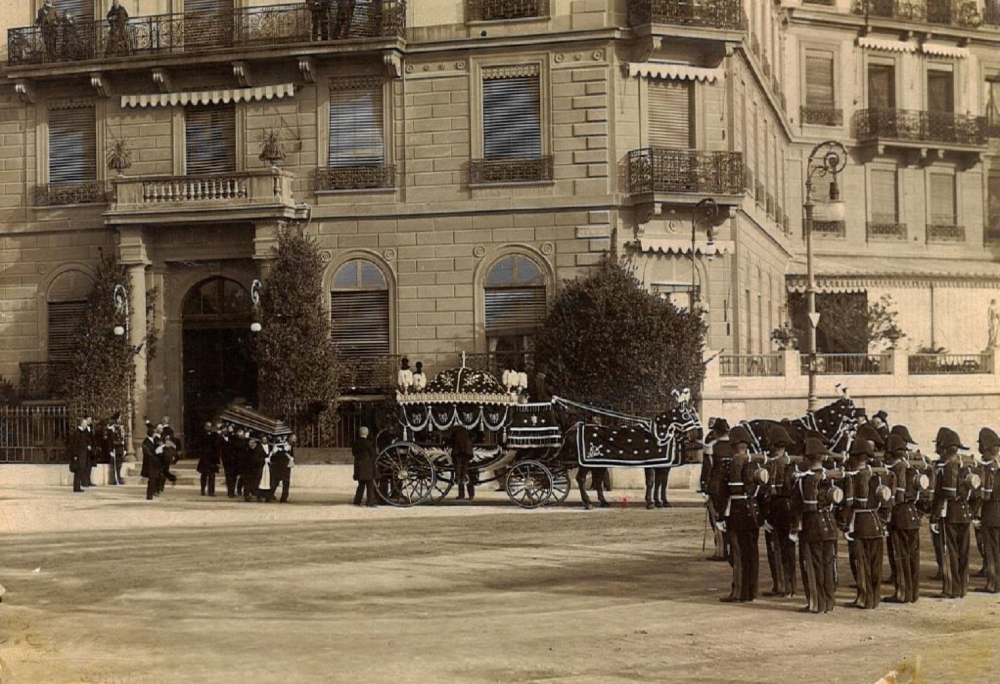

1888
It all began in April 1888
At the insistent request of the Geneva clergy, an agreement creating the company Pompes Funèbres Murith SA was signed.
With the help of Messrs Michel Fert and François Duparc, both coachmen, Anselme Murith, then sacristan of the church of Saint-Joseph, ran the business, which was incorporated on 28 April 1888. In 1913 he was assisted by his sons Paul and Auguste. On 14 September 1898, it fell to Anselme to organise the funeral procession of Her Majesty Empress Sissi of Austria.
